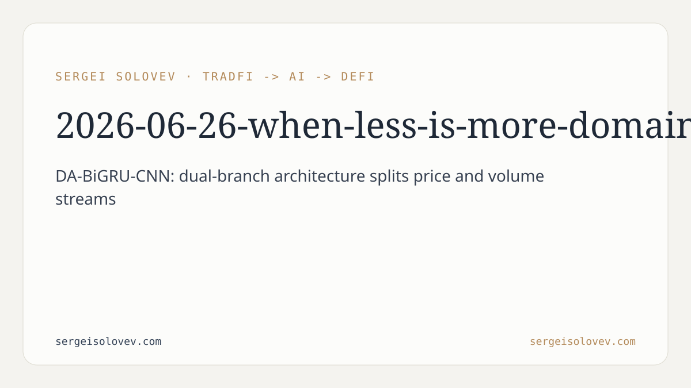

```markdown
---
title: "When Less Is More: Domain-Aware Dual-Branch Networks for LOB Mid-Price Prediction"
date: 2026-06-26
slug: when-less-is-more-domain-aware
meta_description: DA-BiGRU-CNN for limit order book mid-price prediction: feature sufficiency, negative ensemble effects, and domain-aware architecture. 12.1M timesteps.
tags: [quant]
canonical_doi: 10.6084/m9.figshare.31859557
---
Limit order book mid-price prediction sounds like a solved problem. Throw enough features at a deep network, add a gradient boosting model to the ensemble, collect the improvement, move on. That's the received wisdom in both the academic literature and practitioner pipelines. After running a large-scale study on 12,165 LOB sequences spanning 12.1 million timesteps, I found that received wisdom is wrong on both counts—and that the right architectural prior matters more than feature engineering volume or ensemble size.
The central contribution is DA-BiGRU-CNN, a domain-aware dual-branch architecture designed around a simple observation about LOB data: price and volume carry structurally different information. Price levels encode where liquidity is anchored; volume at each level encodes how much is committed there. Feeding them through a single encoder conflates dynamics that operate on different timescales and have different statistical properties.
DA-BiGRU-CNN decomposes LOB features into two dedicated branches—one for price information, one for volume information—and routes each through its own bidirectional GRU encoder. Bidirectional processing matters here because the GRU sees the full sequence in both directions before producing a representation, which helps capture asymmetries in order flow that a unidirectional scan would miss. Both branches also share a set of microstructure features, acknowledging that certain signals—spread, imbalance at the top of book—are jointly informative for both price dynamics and liquidity dynamics.
After the two branches encode their respective signals, the architecture fuses temporal representations through a multi-scale convolutional bottleneck: Conv1d layers with kernels of size 3, 5, and 7. The three kernel sizes capture patterns operating at different temporal granularities simultaneously, which is important when the predictive horizon can be driven by either high-frequency microstructure noise or lower-frequency order flow trends. The bottleneck nature of this fusion layer forces the network to compress the dual-branch representations into a compact joint representation before the final prediction head—acting as a form of implicit regularization.
The name "domain-aware" is deliberate. The architecture encodes domain knowledge about LOB structure—that price and volume are distinct feature families—directly into the model's topology, rather than hoping a generic encoder will discover that separation on its own.
The second finding is the one I expect to be most useful to practitioners, and also the most counterintuitive. I tested a unidirectional GRU trained on 53 basic LOB features against one trained on 219 extensively engineered features—a superset that includes rolling statistics, exponential moving averages, and lag/difference features. The performance difference is statistically equivalent.
This is the "feature sufficiency" hypothesis: recurrent hidden states implicitly learn temporal patterns that feature engineering makes explicit. When you compute a rolling average, you are encoding a temporal pattern into a scalar. When a GRU processes the raw sequence long enough, its hidden state encodes the same pattern—and others you did not think to engineer. The 219-feature pipeline is doing redundant work. The 53-feature pipeline is cheaper to compute, simpler to maintain, and, critically, less exposed to look-ahead bias from the feature engineering process itself.
The implication is practical. Feature engineering for LOB prediction is expensive: you need to be careful about sequence alignment, avoid future leakage in lagged features, and maintain the pipeline in production. If the recurrent architecture already captures what you are engineering by hand, the cost-benefit does not favor the larger feature set.
The third finding runs directly against standard ML practice. Combining the sequential GRU model with a tabular gradient boosting model—LightGBM—consistently degrades prediction quality across experiments. Not once, not on a specific subset: consistently.
The standard justification for ensembling is model diversity: if two models make independent errors, their average is better than either. The problem here is that the errors are not independent. Sequential models and gradient boosting models trained on LOB data are both responding to the same underlying microstructure signals, just through different inductive biases. When those biases conflict on an ambiguous sequence, the ensemble averages in the direction of the weaker model rather than deferring to the stronger one.
This is not a universal result—ensembles do help in many settings—but it documents a concrete failure mode that the community has not paid much attention to: when the models in an ensemble share a latent signal structure, diversity assumptions break down and combining them can hurt. The GRU baseline alone achieves a weighted Pearson correlation of 0.266 on this dataset, outperforming LightGBM by 58%. Adding LightGBM to that baseline does not improve on 0.266; it pulls below it.
On-chain LOB protocols in DeFi are an emerging area where these results become directly actionable. Centralized exchange LOB prediction has a long research history, but the same fundamental problem—predicting short-term mid-price movements from order book state—applies to on-chain venues with LOB mechanics. The dataset in this study covers a large-scale traditional LOB setting, but the architectural and modeling lessons transfer: the separation of price and volume dynamics is a property of LOBs, not a property of specific exchanges.
For practitioners building prediction systems on top of LOB data—whether for execution optimization, market making, or signal research—the feature sufficiency finding has an immediate operational implication. Maintaining a 219-feature pipeline at low latency is harder than maintaining a 53-feature pipeline. If the performance difference is negligible, the simpler system is strictly better: lower latency, smaller attack surface for bugs in feature computation, and reduced risk of introducing look-ahead bias through complex temporal feature engineering. The negative ensemble finding is a direct caution against a common engineering instinct: when performance is stuck, add another model. In this setting, that instinct is wrong.
For ML researchers working on sequence modeling for financial data, DA-BiGRU-CNN's dual-branch design offers a replicable template for encoding domain knowledge into architecture. The principle generalizes: when the input feature space has a natural decomposition grounded in the domain (price vs. volume in LOBs, macro vs. micro signals in other settings), encoding that decomposition structurally in the network tends to produce cleaner learned representations than relying on a shared encoder to discover the separation.
The dataset is a single large-scale LOB study; the feature sufficiency and negative ensemble findings need validation across different asset classes, market regimes, and prediction horizons before they can be treated as general laws rather than empirical regularities. The negative ensemble result in particular warrants a theoretical treatment: under what conditions does the independence assumption underlying ensemble averaging break down for sequential financial data, and can that breakdown be predicted without running experiments? The DA-BiGRU-CNN architecture also has not yet been benchmarked against the current state-of-the-art transformer-based LOB models. That comparison is on the roadmap. Finally, extending this work to on-chain LOB data—where the microstructure differs from traditional exchanges in ways that may favor different architectural choices—is the most direct path toward actionable DeFi applications.
---
```bibtex
@misc{solovev2026whenless,
author = {Solovev, Sergei},
title = {When Less Is More: Domain-Aware Dual-Branch Recurrent Networks
for Limit Order Book Mid-Price Prediction},
year = {2026},
doi = {10.6084/m9.figshare.31859557},
url = {https://doi.org/10.6084/m9.figshare.31859557},
note = {Preprint}
}
```
```